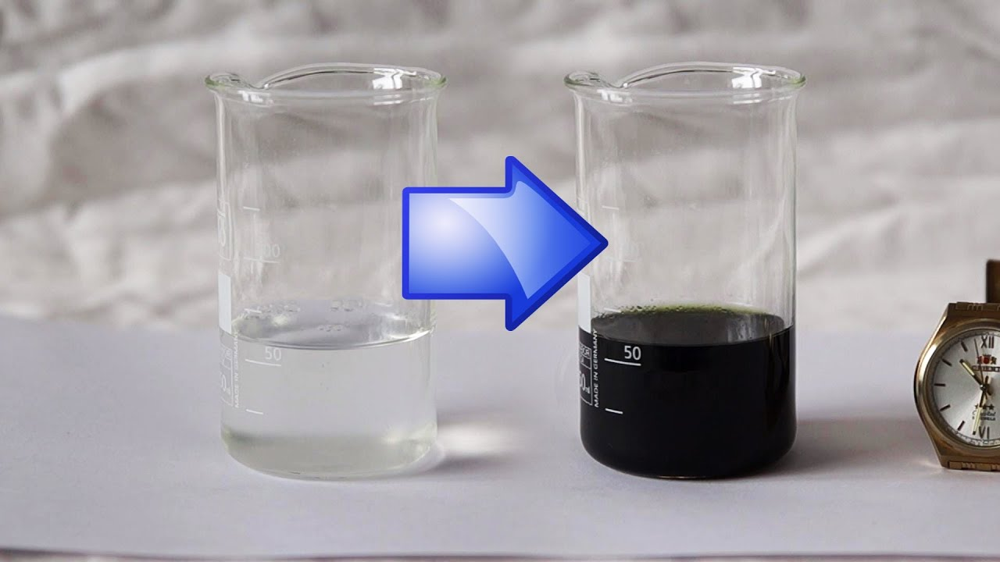

Iodine Clock

Description:
Try this cool trick at parties to make people think you're Jesus! Except instead of water to wine, it's iodine to iodine and starch.
Materials:
- 10 mL 2.0 M sulfuric acid
- 10 mL 3% hydrogen peroxide
- 176 mL water
- 0.04 g sodium thiosulfate pentahydrate
- 0.9 potassium iodide
- 4 mL starch solution (cornstarch in water)
Procedure:
- Combine 10 mL 2.0 M sulfuric acid, 10 mL 3% hydrogen peroxide, and 80 mL water in a glass container to make solution A.
- Make a solution B1 of 0.04 g sodium thiosulfate pentahydrate in 20 mL water.
- Make a solution B2 of 0.9 g potassium iodide in 5 mL water.
- Combine solutions B1 and B2 with 4 mL starch solution, and 71 mL water in a glass container to make solution B.
- Pour equal amounts of solution A and solution B in another glass container and wait.